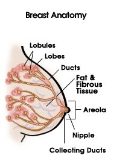
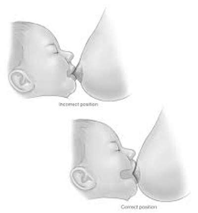
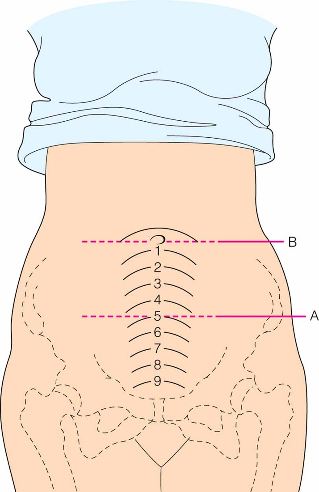
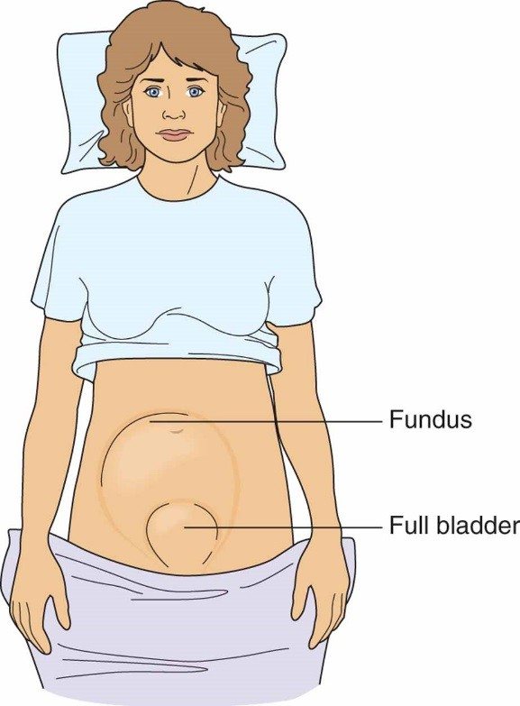
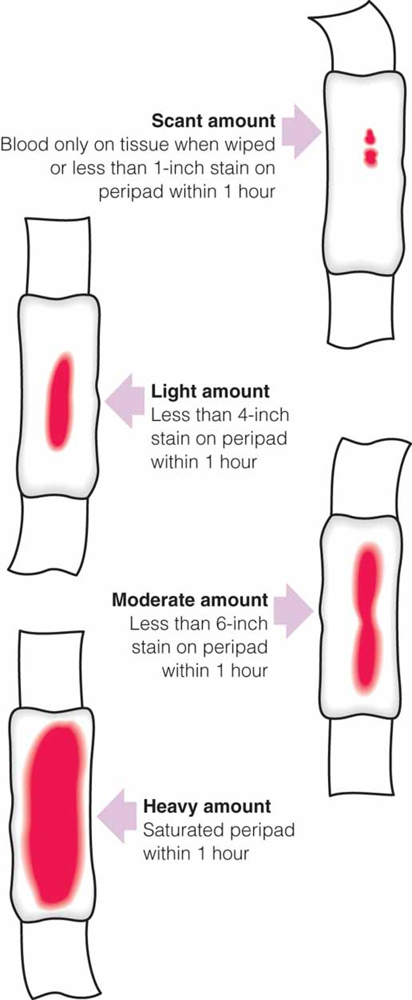

Week 5 · Postpartum
Postpartum Care & Complications
Physiologic Postpartum Changes
The postpartum period is the body's return toward its pre-pregnancy state. Always ask: is this finding a normal process of change, or a symptom of a complication?
| System / Change | What's Normal & What to Watch For |
|---|---|
| Temperature | May be slightly elevated up to 100.4°F for the first 24 hours after birth, and again low-grade (~99°) when the milk comes in. Over 100.4°F — or any elevation after the first 24 hours — is a fever; look for a source of infection. |
| Pulse | Bradycardia is normal during the first 6–10 days. Tachycardia can follow a difficult labor, or be a rebound reflex of hemorrhage — rule out bleeding, fever, respiratory disease, or pulmonary edema. |
| Blood pressure | An elevation should return to normal. High BP → preeclampsia, essential/chronic hypertension, renal disease, or anxiety. Low BP → suspect a uterine hemorrhage or hematoma. |
| Cardiac output | Declines about 30% in the first two weeks; reaches normal by 6–12 weeks. |
| Postpartum diuresis | The kidneys must clear 2,000–3,000 mL of extra extracellular fluid — expect greatly increased urination and some weight loss. Failure to eliminate it can cause pulmonary edema (listen for crackles), especially in cardiac patients. |
| Respirations | Should be non-labored and clear. Watch for fluid overload from IV boluses, oxytocin (acts like an antidiuretic hormone), and magnesium sulfate (can shift fluid to the lungs). |
| Headaches | The most common neurologic symptom, usually from a first-week fluid shift. Also consider CSF leakage after an epidural/spinal (treated with a blood patch), a hypertensive disorder/preeclampsia (cerebral swelling), or stress and fatigue. Treat with acetaminophen ± caffeine; watch for visual spots or blurring. |
| Blood values | A non-pathologic leukocytosis can occur in the first week. A 2–3% drop in hematocrit ≈ 500 mL blood loss. Plasma and platelets normalize by about the 6th week; all values return to pre-pregnancy levels by the end of the 6-week period. |
| Weight loss | An initial 10–12 lb (baby, placenta, amniotic fluid) plus up to 5 lb of fluid in the diuresis. Many return near pre-pregnancy weight by 6–8 weeks — but there is no rush and she shouldn't feel pressured. |
| Return of menses / ovulation | Not breastfeeding: menses in ~7–12 weeks; ovulation as early as 7–75 days. Breastfeeding: menses may be delayed 3+ months. Breastfeeding is NOT reliable birth control — ovulation can occur before the first period. |
Postpartum blood pressure medications (nifedipine XL, labetalol, methyldopa) and continued magnesium sulfate (usually left on at least 24 hours after delivery when started) may be used. Antihypertensives covered again here — review in Hypertensive Disorders
BUBBLE-HE: The Postpartum Assessment
B — Breasts · U — Uterus / abdomen · B — Bladder · B — Bowel · L — Lochia · E — Episiotomy, lacerations & incisions · H — Homans' sign & hemorrhoids · E — Emotions
Breasts & Lactation Suppression
Assess size, shape, and any reddened areas or engorgement (breasts become larger and full when the milk comes in). Check the nipples for cracks, fissures, soreness, or inversion — for a mom who wants to breastfeed, the nipple should be erect; flat or inverted nipples may need encouragement or a device to draw them out.

Suppressing Lactation (Mom Not Breastfeeding)
- Wear a well-fitting bra, ace wrap, or binder to compress the breasts
- Cold compresses or cabbage leaves; anti-inflammatories (ibuprofen) for tenderness
- Avoid warm water / nipple stimulation — in the shower, keep her back to the warm water and just soap, rinse quickly. Any stimulation signals the body to make milk.
Breastfeeding
Supply and demand: the more the breast is emptied, the more milk the body makes. Feed every 2–3 hours (about 8–12 times/24 h), roughly 10–20 minutes starting on one breast. The breast may feel heavy but should not be hard, sore, or reddened. No alcohol for at least 2 hours before nursing (pump ahead if she wants a drink); limit alcohol to occasional use.
Positions & Latch
| Position | Notes |
|---|---|
| Cradle | Baby's head rests on mom's arm, lying across her chest; good supported posture |
| Modified (cross) cradle | Opposite arm from the feeding breast supports the head; same-side hand supports the breast |
| Football hold | Great for large breasts or after a C-section (nothing lies on the abdomen); the feeding-side hand supports the head, the other guides the breast |
| Side-lying | Comfortable after abdominal surgery. The adult must not fall asleep — risk of rolling onto and smothering the baby (safe sleep: no co-sleeping) |

Nipple shields (flexible) help with flattened nipples or a baby who isn't an aggressive feeder — the baby nurses through the holes; often no longer needed once feeding improves. Let the nipples air-dry after feeding, before replacing the bra or pads, to prevent breakdown.
Is the Baby Getting Enough?
Reassuring Signs
- 6–8 wet diapers per day
- Milk visible at the edges of the baby's mouth; audible swallowing during feeds
- The breast feels softer after feeding (emptied) than before
For insufficient milk, make sure mom's own fluid intake is good — she may need to increase to ~2 liters of water a day (she must take in good fluid to make good fluid).
Common Concerns & Difficulties
Concerns Moms Raise
- Nipple pain (usually a poor latch)
- Embarrassment / privacy in public — offer cover-ups, private spaces
- Feeling "tied down" — pumping lets someone else feed at times
- Unequal feeding responsibility — involve the partner (diapering, giving expressed milk)
- Worry the baby isn't getting enough — teach the reassuring signs above
Difficulties & Fixes
- Sore nipples: good latch, lanolin cream, air-dry, rub in a little breast milk, start on the less sore side (baby sucks hardest first)
- Flat nipples: roll with fingers to draw them out, or use a nipple shield
- Plugged ducts: frequent nursing, change positions, manual massage + warm compresses; some start on the affected side; a pump may help — avoid pressure from purse straps, slings, seat belts
Mastitis vs. Engorgement
| Feature | Mastitis | Engorgement |
|---|---|---|
| What it is | Infection of the breast tissue (often Staph, E. coli, Candida); may follow a plugged duct | Venous stasis — breasts overfull with milk |
| Onset / spread | Sudden; usually one affected side | Gradual; often both breasts, whole breast |
| Fever | Yes — a decent fever, chills, malaise, flu-like symptoms | Not usually a high fever |
| Findings | Reddened, painful, swollen area; sometimes nipple discharge (not milk) | Breasts hard and painful |
| Care | Warm compresses, analgesics, antibiotics for 7–10 days (e.g., penicillin) — finish the full course; supportive bra (avoid underwire), hand-washing, keep emptying the breast | Don't miss feedings; hand-express/pump to soften before feeds; nurse 8–12×/day ≥10–15 min/breast; warm compress before feeds for let-down; cool applications (ice, frozen peas) between feeds; cabbage leaves |
Weaning
Substitute one cup/bottle feeding for one breastfeeding session over several days, then gradually more over several weeks. A slow method is preferred — it prevents engorgement, lets the infant adjust its eating at its own rate, and gives time for psychological adjustment.
Uterus & Abdomen
After delivery the abdomen is loose and flabby but responds to exercise. Watch for diastasis recti abdominis (separation of the abdominal muscles that made room for the uterus — may knit back together or, if severe, need later surgery) and striae (stretch marks; red = newer, silvery = older/healed).
Afterpains
Afterpains are intermittent uterine contractions of involution (the uterus working back to its pre-pregnancy state). Comfort: rest prone with a pillow under the abdomen to keep the uterus contracted; ibuprofen/Motrin for cramping. Caution with Motrin — avoid if platelets are < 70,000 or she has a history of preeclampsia.
Involution & Fundal Assessment
Involution: after birth the fundus is at the level of the umbilicus by 6–12 hours, then descends about 1 cm (1 fingerbreadth) per day, reaching the true pelvis by about day 10. The uterus returns to pre-pregnancy size by ~5–6 weeks. The spongy decidua sloughs off (seen in the lochia); the placental site heals by exfoliation (a one-time bump in bright red blood as its "scab" sloughs is possible).


| Causes of Uterine Atony | Why |
|---|---|
| A lot of oxytocin in labor | Induction/augmentation saturates the oxytocin receptors, so they respond poorly after delivery |
| Grand multiparity | Many prior deliveries |
| Overdistension | Twins/triplets or a large baby — the uterus had to stretch bigger |
| Natural red hair | Anecdotally these patients tend to bleed/bruise more (no clear scientific evidence, but noted from practice) |
Endometritis
A postpartum infection of the uterine lining. She complains of uterine tenderness, high fever, chills, and foul-smelling lochia.
| Risk Factor | Why |
|---|---|
| Cesarean birth | The uterus has been cut |
| Prolonged rupture of membranes | Water broken > 18 hours |
| Prolonged labor / multiple vaginal exams | Especially exams after the water broke |
| Internal devices | FSE or IUPC |
| Instrument-assisted or manual delivery | Forceps/vacuum, or manual removal of the placenta |
| Chorioamnionitis | Infection of the chorion/amnion in the bag of water |
Treatment: broad-spectrum antibiotics (e.g., clindamycin + gentamicin) until culture/sensitivity results guide specific therapy; continue until she is afebrile for 24–48 hours.
Bladder & Bowel
Bladder
- Swelling/bruising around the urethra; decreased sensation of bladder filling (worse with epidural anesthesia)
- Greatly increased urine output from diuresis (clearing 2,000–3,000 mL)
- Increased infection risk (dilated ureters and renal pelvis)
- Keep the bladder empty; monitor for distension; use an in-and-out cath if she is full and can't void (a full bladder deviates the uterus and increases bleeding)
- UTI prevention: wipe front-to-back, peri-bottle rinse then pat dry, adequate fluids, void before/after intercourse, cotton underwear, cranberry to acidify urine
Bowel
- Often sluggish after birth — progesterone, decreased muscle tone, pressure of the birth, and anesthesia (especially after C-section)
- An episiotomy, laceration, or hemorrhoids can make her afraid to push for fear of tearing
- Encourage stool softeners, tucks pads for hemorrhoids, and regular bowel movements — constipation worsens perineal discomfort
Lochia
Lochia is the vaginal discharge of blood, mucus, and cells from the uterus. Describe it like a period: heavier and brighter at first, then lighter and darker over time. A change backward — e.g., pinkish then suddenly bright red again — should be reported.
| Stage | Timing | Color |
|---|---|---|
| Lochia rubra | Days 1–4 | Red |
| Lochia serosa | Days 4–10 | Pink |
| Lochia alba | Day 10–20 (until the cervix closes) | White / whitish |
Amount is charted as scant, light, moderate, or heavy (saturating). Never should she saturate a pad in less than 1 hour — that suggests a postpartum hemorrhage.

Postpartum Hemorrhage
| Cause | What to Know |
|---|---|
| Uterine atony | The big one — the fundus is not firm |
| Lacerations of the genital tract | Cervical, vaginal, or perineal. Suspect a laceration when the fundus is firm but she is still bleeding bright red — the provider must check. Laceration degrees covered again here — review in Intrapartum Complications |
| Episiotomy | Can bleed, especially if it opens up |
| Retained placental fragments | Prevent the uterus from clamping down. Retained placenta & abnormal adherence covered again here — review in Intrapartum Complications |
| Hematomas | Vulvar, vaginal, or subperitoneal |
| Uterine inversion | The uterus prolapses/turns inside out — an emergency; the provider must replace it |
| Uterine rupture | May lead to hysterectomy if it can't be repaired |
| Coagulation disorders | Low platelets or DIC |
Prevention & Nursing Care
What the Nurse Does
- Fundal massage — do not neglect or delay it; if the uterus feels soft, massage immediately
- Assess the perineum for free-flow bleeding or clots at the same time as the fundal check
- Encourage frequent voiding; catheterize if the bladder is full and she can't empty it
- Watch hematocrit; repeat a CBC on the first postpartum day; encourage iron-rich foods ± supplement
- Teach her to rise slowly to minimize orthostatic hypotension if her count is low
Medications to Control Bleeding
| Medication | Key Points |
|---|---|
| Oxytocin (Pitocin) | A premixed bag run after delivery of the placenta and in the early postpartum period; can be given IM if no IV access |
| Methylergonovine (Methergine) | Helps clamp the uterus down. Do NOT use in a patient with high blood pressure — it can cause rebound hypertension requiring further treatment (a risk even though she is currently bleeding/hypotensive) |
| Carboprost (Hemabate) | Usually IM; a good next line for someone not responding to oxytocin who has chronic hypertension. Warning — a "Code Brown": intense, sudden, explosive diarrhea; keep chucks under her and warn her |
| Misoprostol (Cytotec) | Given in higher doses rectally after delivery to help the uterus clamp down (not vaginally — it would flow out with the bleeding); can follow with lower oral doses. Misoprostol for induction (different use) covered in Artificial Management of Labor |
Perineum, Episiotomy & Incision Care
Note cervical/vaginal changes; the cervix is often spongy, flabby, and bruised, its external os becoming a lateral slit (a diaphragm must be refitted). The vagina is edematous with small superficial lacerations; rugae reappear in ~3–4 weeks and it returns to pre-pregnancy state by ~6 weeks. Note the type of episiotomy (midline vs. mediolateral) and the degree of any laceration, and confirm it is approximated and not bleeding.
Perineal & Hemorrhoid Care
| Measure | How & Why |
|---|---|
| Ice, then warmth | Ice packs the first day (a layer under the ice — never directly on tissue), then warm treatments starting day 2 |
| Topical anesthetics | Epifoam, tucks/witch-hazel pads, rectal suppositories for comfort |
| Sitz bath | Sits in the toilet; moving warm water cleanses, increases warmth/blood flow, and soothes |
| Peri-bottle | Warm water squirted over the perineum on the toilet, then pat dry |
| Hemorrhoids | Sitz baths, topical anesthetic/rectal suppositories, witch-hazel (tucks) pads; side-lying; avoid prolonged sitting; fluids and stool softeners |
| Waffle cushion | Takes pressure off a sore perineum |
Cesarean Incision Care
Nursing Care After a C-Section
- Assess the incision using REEDA; it may be closed with staples (removed with a staple remover, often followed by Steri-Strips) or with Dermabond skin glue. In the shower, let soapy water run over it, then pat dry; leave Steri-Strips to peel off on their own
- Minimize respiratory complications: deep breathing, incentive spirometer, early ambulation
- Encourage rest (hard with a newborn) and pain management — avoid narcotics if possible, using ibuprofen/acetaminophen and reserving narcotics for when needed
- Minimize gas pains: simethicone (chewable gas tablet) and ambulation
Homans' Sign & Thrombophlebitis
Homans' sign screens for thrombophlebitis: dorsiflex the foot and assess for calf pain. Some units avoid it — if a clot is present, the maneuver could dislodge it, so follow your unit's policy and provider orders. Also assess calf size, redness, warmth, and pain with palpation or walking, and ask about pain in the leg, inguinal area, or lower abdomen (comparing sides).
Preventing Thrombophlebitis
- Avoid prolonged standing/sitting and crossing the legs; take breaks to walk on long car rides
- SCDs (sequential compression devices) on the lower legs when she can't ambulate (e.g., after a C-section)
- Early ambulation — promotes circulation and reduces constipation, respiratory dysfunction, and clots, and improves overall well-being
Emotional Adjustment
| Phase | Timing | What She's Doing |
|---|---|---|
| Taking in | First 1–2 days | More passive and dependent; follows suggestions, hesitates to make decisions; focused on herself (food, rest) and on working through the birth experience — talks about how the delivery went |
| Taking hold | Around day 2–3 | Ready to resume control and mothering; more confident and autonomous, asks for less help, but needs reassurance she's doing a good job; focused on the baby |
Becoming a Mother (Maternal Role Attainment)
| Stage | Description |
|---|---|
| Anticipatory | Begins in pregnancy — looks for role models, fantasizes, role-plays, forms expectations |
| Formal | Begins at birth — the role is guided by the expectations of others and her social system |
| Informal | She develops her own role and how it fits her lifestyle; makes future parenting goals |
| Personal | She internalizes the role — harmony, confidence, and competence as a mother |
Postpartum Mood Disorders
| Condition | Frequency & Timing | Features |
|---|---|---|
| Postpartum blues | 50–80% of mothers; days 3–5, up to 6 weeks; resolves naturally in ~10–14 days | Transient, self-limiting. Mood swings — sadness interspersed with happy feelings, irritability, oversensitivity, episodic cheerfulness, trouble sleeping, feeling let down, anxiety. Driven by rapid drops in estrogen, progesterone, and prolactin, plus fatigue and an emotional letdown after birth |
| Postpartum depression | 3–30%; greatest onset around the 4th week; may appear up to 1 year after birth | The most under-diagnosed pregnancy-related complication. Not mood swings — a persistent down feeling. May contemplate suicide as escape or to "protect" the baby; dying may seem preferable. Disrupts bonding, lactation, and newborn development; untreated can become major depression |
| Postpartum psychosis | 1–2 per 1,000 births; first 1–3 months; 90–95% improve with treatment | Agitation, hyperactivity, insomnia, confusion, poor memory/concentration; delusions or hallucinations, very illogical thinking. Risk of suicide and infanticide |
Depression risk factors: first pregnancy, ambivalence toward the pregnancy, prior depression/postpartum depression, poor social support, dissatisfaction with self/body image, adolescence, history of abuse, and socioeconomic hardship.
Bonding, Discharge & Teaching
Attachment & Bonding
Bonding is a gradual exploration — fingertips, then palms, then larger body surfaces. Moms often use the en face position (direct, face-to-face eye contact); partners are often engrossed but at a little more distance. Promote it with rooming-in, kangaroo care, private acquaintance time, telling the birth story, and involving siblings. Parents may ask to delay eye prophylaxis (erythromycin ointment) about an hour so the baby will open its eyes for bonding. Individualize cultural and religious care by simply asking the patient what matters to her.
Activity, Sexual Activity & Rest
Home Teaching
- Rest when the baby sleeps; accept outside help (let visitors hold the baby while she naps)
- Avoid heavy lifting, frequent stair climbing, and strenuous activity while the uterus and pelvic muscles recover
- Sexual activity: resume after the episiotomy/lacerations have healed and lochia has stopped — often waiting until the 4–6 week postpartum visit. Lubrication may be needed; discuss contraception; fatigue and infant demands may lower desire
Discharge Criteria
Ready for Discharge When…
- Vital signs stable; uterus involuting; appropriate lochia with no signs of infection (and she knows the signs)
- Episiotomy/laceration well approximated; she can do peri care and take medications as ordered
- She can void, pass gas, eat, and drink without difficulty
- She knows the symptoms of postpartum depression and resources; demonstrates self- and baby-care and appropriate interaction; reviewed infant safety
- Vaccines if needed (e.g., MMR if non-immune/equivocal); if she is Rh-negative with an Rh-positive baby and a negative direct Coombs, she receives RhoGAM. RhoGAM & direct Coombs covered again here — review in Antepartum Complications
- Aware of resources: home health, follow-up calls, breastfeeding/infant CPR classes, support groups
Self-Test Flashcards
Click a card to flip it and check your answer.